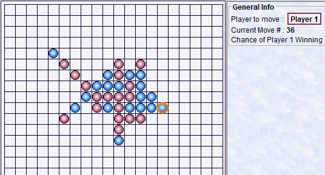
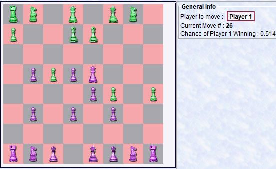
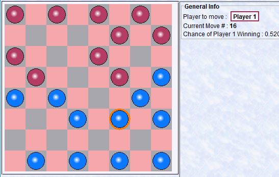
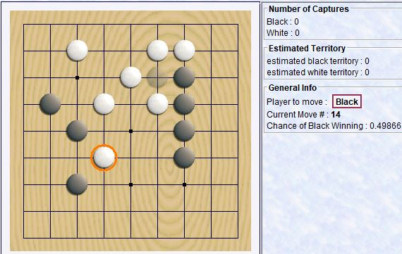
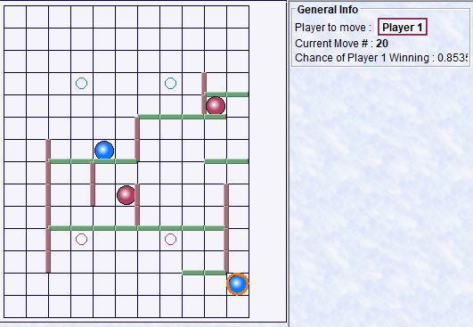
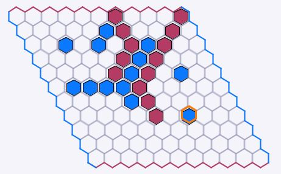
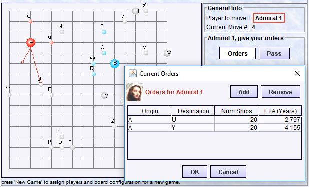
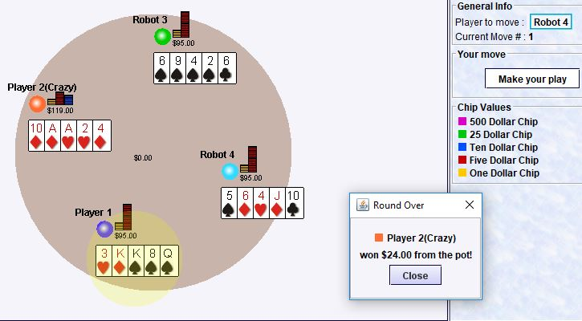
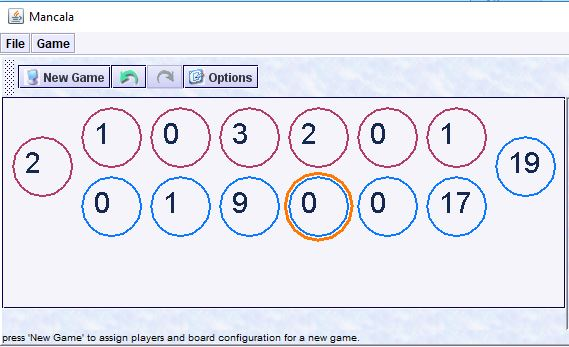
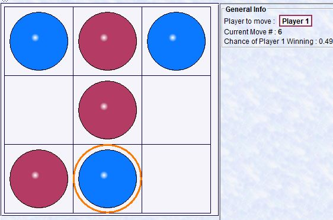

Below are some games created using this game framework. There are implementations for games like Chess, Checkers, Go, Blockade, Pente, Mancala, Poker, and others.
Download this zip file and unzip it. Then in the bin directory, run one of commands indicated below.
All the two player games on this page use the strategy design pattern to determine how to search. This means that it is easy to plug in alternative search algorithms. So far, I have implemented minimax, negamax, negascout, negamax with memory, negascout with memory, MTD-f, and UCT. Go requires a very different strategy in order to be successful, but for now these methods provide a starting point for experimentation. A more cutting edge version of go can be found in Leela-Zero. If you look in the options, you will see a way to show a visualization of the game tree while you are playing.
Go-Mokubb4-games -name gomoku Try to win by getting five in a row before the computer does. I used to play gomoku a lot with my wife when we first met (she is quite good at it). GoMoku is the first game that I created using my game framework. I first created a Turbo Pascal version back in 1991, nbut this one is better. My motivation has been to make it good enough to beat my wife. The object of the game is to get 5 in a row (horizontally, vertically, or diagonally). As with all the games created using this framework, you can play against the computer, another person, or have the computer play against itself. |
 |
Chessbb4-games -name chess Chess is a relatively simple game compared to go. I implemented it in only 3 days - after I spent a year implementing go and the rest of my java game framework. Try to beat the computer by check-mating her king. Your pieces are at the top. Checkmate the opponent's King to win. |
 |
Checkersbb4-games -name checkers Checkers is a simple game. I implemented it in only 2 weekends after I got the gomoku program running and already established a framework for creating additional games. Capture all of the opponents pieces to win. |
 |
Gobb4-games -name go Go has long been a grand challenge for computer scientists. Until the year 2000, the Ing Foundation offered a million dollar prize to anyone that could create a go program capable of beating a professional player. In 2017, AlphaGo became the first program to beat a professional. I started work on this program in the year 2000. It does not play very well, but it lead me on an interesting journey. For those interested in learning about a deep learning solution to Go, I recommend looking at Leela-Zero. |
 |
Blockadebb4-games -name blockade Blockade is a relatively new game created by Lakeside. I used to play it as a kid, but I don't see it in the stores anymore. Each player starts with two pawns on designated spaces near their side of the board. They each have (typically) ten blue walls and ten green walls, which fit in the slots between the grid squares and are two squares wide. A player's turn consists of moving his pawn two spaces and then placing a wall anywhere on the grid. The object is to get one of your pawns around the obstacles being set by your opponent and onto one of his or her starting spaces. |
 |
Hexbb4-games -name hex Hex Alternate placing of pieces. When players edges connect by a string of pieces of the same color, that player wins. The player who goes first has a distinct advantage. |
 |
Galactic Empirebb4-games -name galactic This multi-player game is loosely based on a game I played on a Comodore 128 back in the late 80's. the original game had only text graphics, but was fun to play with friends in the college dorm at RPI. This version has several improvements: better graphics, robot players, and there are visual indications of fleet sizes and locations. |
 |
Pokerbb4-games -name poker This is basic 5 card stud poker. I may expand it to play Texas holdem and other poker variations in the future. There is also a client server version of this and the other games for online play, but its a work in progress. This version takes a little while to start because it checks to see if there is a server first, and has to wait for that check to timeout. |
 |
Mancalabb4-games -name mancala Mancala Move stones on your side of the board. To move, you click on one of the bins in your row. This picks up all the stones in that bin and moves them counter-clockwise, putting one stone in each bin as it goes. If the last stone lands in your home, then you go again. If the last stone lands in an empty bin on your side and there are stones in the opponent's cup right across from it, then all the stones in both cups get put into your home. |
 |
Tic-Tac-Toebb4-games -name tictactoe Implementing unbeatable Tic-Tac-Toe was very easy using the game framework. If you want to add your own game, this implementation may provide a useful example. |
 |